来源：知识星球「南半球聊财经」星主 Jason 不跪当天发帖 当天发帖数量：16 篇（10:34 – 13:01） 本报告逐帖做中文深度解读，并解读每张配图。
今日要点速览
今天 Jason 转发的内容几乎围绕一条主线：全球利率高企 + 地缘冲突升级，而中国正处在"弱通胀 + 财政偏紧"的十字路口。海外一端，30 年期美债拍卖创下 2007 年以来最高收益率、德国大幅扩张国防开支、美伊在霍尔木兹海峡持续军事升级，都在推高全球"安全资产"的成本与风险溢价；黄金短线回调但各国央行（波兰）仍在逢低扫货。中国一端，6 月 CPI 回落、PPI 再通胀动能减弱、GDP 平减指数虽转正但内需仍偏弱，花旗更点出"事实上的财政紧缩"是二季度经济放缓的隐性推手。资产层面，大摩连发数篇看港股/中国资产修复（融资空头回补 + 南向资金 + 监管边际转松），认为 7 月底到 8 月是关键窗口。行业与他国层面还覆盖了欧盟对华轮胎反倾销、中药材价格大跌、韩元为何偏弱、新西兰央行仍要加息等。总体基调：海外"高利率 + 高风险"，中国"低通胀 + 待发力"，港股中国资产处在预期修复的第一阶段。
帖 1 · 13:01 · 德国大举扩张国防开支 #其他国家经济#
帖子原文
bloomberg：德国财政部长说，我们无法通过平衡预算来抵御俄罗斯，什么比安全更重要？德国在北约会议期间签订协议将采购美国战斧等武器，特朗普表示自己感受到欧洲的爱意。#其他国家经济#
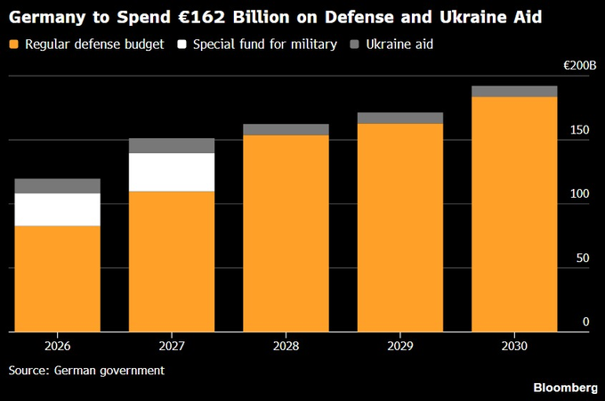
一句话核心：德国放弃"预算平衡"的传统教条，未来五年国防+援乌开支将逐年大幅攀升，并向美国采购武器。
背景与关键数据：德国长期以"债务刹车"（Schuldenbremse，宪法规定的赤字上限）著称，是欧洲"财政纪律"的象征。财长这句"无法用平衡预算抵御俄罗斯"，等于官方宣告安全优先级已高于财政纪律。图中显示德国国防总盘子将从 2026 年约 €110B 一路升到 2030 年约 €185B。所谓"战斧"（Tomahawk）是美国的远程巡航导弹，采购它意味着德国把一部分国防美元回流给美国军工，这也是特朗普口中"欧洲的爱意"——即欧洲用真金白银的军购来换取美国的安全承诺。
图片解读：这是一张彭博堆叠柱状图，标题《Germany to Spend €162 Billion on Defense and Ukraine Aid》。横轴为 2026–2030 年，纵轴为欧元（0–€200B）。每根柱子分三段：橙色=常规国防预算（占大头，逐年增厚）、白色=军事专项基金（2026–2027 年较明显，之后被并入常规预算）、灰色=对乌援助（每年一小段）。趋势非常清晰：总开支单边上行，从约 1100 亿升到约 1850 亿欧元，且越往后越依赖"常规预算"而非一次性专项基金，说明扩军是长期化、制度化的。
为什么重要 / 对市场和经济的含义：欧洲主要经济体集体加杠杆搞国防，意味着欧洲政府债券供给将持续增加——这与后面几帖"全球长端利率上行"是同一枚硬币的两面：政府借得越多，债券收益率越难降。对市场，利好欧美军工股与美国对欧军售；对宏观，财政扩张短期托底增长，长期加重债务负担。
延伸知识：这里的核心概念是"财政主导（fiscal dominance）"的抬头——当安全、产业、AI 等战略需求压过财政纪律，各国倾向于"先花钱再说"，央行降息的空间被政府发债挤占。历史类比：冷战时期美苏军备竞赛也曾推高利率与通胀。理解这一点，就能把"德国扩军""美债高收益""AI 基建融资"这些看似无关的新闻串成一条线：全球正进入一个"借钱需求旺盛、利率难降"的新常态。
帖 2 · 12:52 · 全球养老金正在"离开债券" #论文或书籍推荐#
帖子原文
BIS：养老金部门是全球金融市场的重要投资者，也是政府债和公司债的重要持有人。长期以来，养老金投资者已经从固定收益证券转向共同基金份额；与此同时，也从传统投资转向另类投资。美国养老金的证据显示，固定收益资产占比下降，既来自公共债务减少，也来自私人债务减少。全球利率下降可能是推动这一变化的重要原因。基于全球样本，我们发现，本币政府债收益率下降，与养老金组合中债券占比下降、共同基金和海外资产占比上升相关。#论文或书籍推荐#
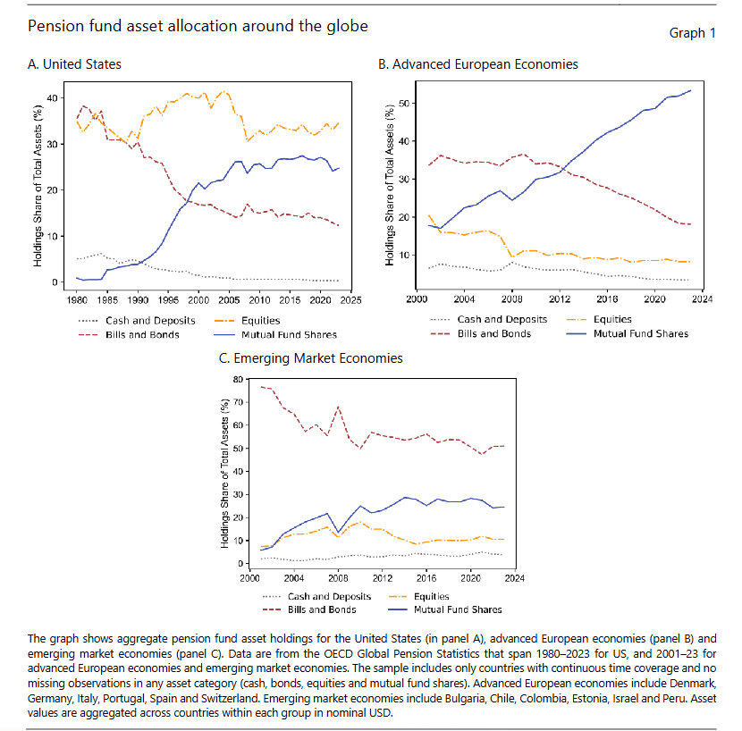
一句话核心：过去几十年低利率环境下，全球养老金越来越少买债券，越来越多配置共同基金和海外/另类资产。
背景与关键数据：这是国际清算银行（BIS，被称为"央行的央行"）的一篇研究。养老金是债市最重要的"长钱"买家之一，它们的配置转向会深刻影响债券的需求端。核心结论：利率越低，债券越"不香"，养老金就把钱挪去追求更高回报的共同基金和另类投资（私募股权、地产、基建等）。
图片解读：图为 BIS 的三联折线图《Pension fund asset allocation around the globe》，纵轴都是"某类资产占总资产比重(%)"，四条线分别是现金(点线)、债券Bills&Bonds(红虚线)、股票Equities(橙虚线)、共同基金份额Mutual Fund Shares(蓝实线)。
- A 美国（1980–2023）：蓝线（共同基金）从个位数一路飙到 25% 以上，红线（债券）从 35% 附近降到 12% 左右——债券占比腰斩。
- B 发达欧洲（2001–23）：蓝线（共同基金）从约 17% 升到 50% 以上，红线（债券）从 35% 降到不足 20%——转移更剧烈。
- C 新兴市场：债券（红线）虽仍是主力但从近 80% 降到 50% 附近，共同基金/股票缓慢上升。 共同的信号：债券在养老金组合中的地位系统性下降。
为什么重要 / 对市场和经济的含义：如果连养老金这样的"债市压舱石"都在减配债券，那么在利率回升、政府大量发债的当下，债券的"天然买家"正在变少——这会放大长端利率的上行压力，与今天多帖（美债、德债）呼应。Jason 把它标为"论文推荐"，意在提示这是理解债市供需的底层结构性变化。
延伸知识："Search for yield（追逐收益）"是理解过去二十年资产配置的钥匙：利率被压到极低时，机构被迫承担更多风险去够到目标回报，于是资金涌入股票、私募、海外。反过来，当利率回到 4–5%，债券重新变得有吸引力，这个"离开债券"的长期趋势理论上会放缓甚至逆转——这正是当前市场的一个关键拐点观察点。
帖 3 · 12:41 · 中国 GDP 平减指数同比转正回升 #经济数据#
帖子原文
广发：从GDP模拟平减指数同比来看，1月为-0.44%，2月转正至0.42%，3-4月连续上行至0.8%、1.84%；5-6月分别为2.28%、2.24%。#经济数据#
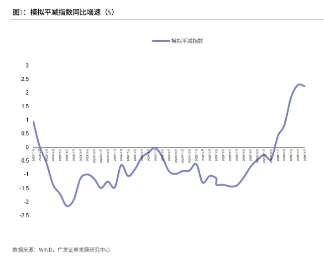
一句话核心：衡量全经济体价格水平的 GDP 平减指数从年初的负值一路回升到 +2.2% 左右，说明中国"通缩"压力在边际缓解。
背景与关键数据：GDP 平减指数（GDP deflator）是最广口径的物价指标——它涵盖了消费、投资、进出口所有商品和服务的价格，比 CPI（只看居民消费）更全面。用大白话说：CPI 是"菜篮子物价"，平减指数是"整个国家所有东西的综合物价"。广发用月度数据模拟出来：1 月还是 -0.44%（价格同比下跌，即通缩），2 月转正，到 5–6 月升到 +2.2% 左右。名义 GDP = 实际 GDP × 平减指数，平减指数回正意味着名义增长在修复，企业收入、利润、税收的"体感"会好一些。
图片解读：广发证券《图1：模拟平减指数同比增速(%)》折线图。横轴是 2022 年至 2026 年 6 月的月度时间轴，纵轴 -2.5% 到 +3%。曲线在 2022–2025 长期趴在 0 轴下方（-1% 到 -2% 的通缩区），2025 年末开始快速拉升，一路穿越 0 轴冲到 2026 年中的 +2.2% 附近，是几年来最高。视觉上就是一条"深 V 触底后强力反弹"的曲线。
为什么重要 / 对市场和经济的含义：过去两年市场最担心中国陷入"资产负债表式通缩"（价格跌→企业不敢投资→需求更弱的恶性循环）。平减指数转正是"走出通缩"的关键信号之一，利好股市风险偏好、企业盈利预期。但要注意——它主要是上游（PPI）价格反弹带动的，下游/消费端仍偏弱（见帖 13、14），所以是"结构性、局部的"回暖，不是全面再通胀。
延伸知识：区分三个物价指标很有用——CPI（居民消费）、PPI（工业出厂价）、GDP 平减指数（全经济体）。当 PPI 强、CPI 弱时，平减指数会被上游拉起来，但老百姓"体感物价"不一定改善。这正是当前中国的处境：宏观数据在回暖，微观消费仍谨慎。学会看"哪个价格在涨"，能帮你判断复苏是真需求驱动还是成本/供给驱动。
帖 4 · 12:38 · 华创预计 6 月是年内 PPI 高点 #经济数据#
帖子原文
华创：我们预计6月份有较大概率是年内PPI同比的高点，但下半年也不会大幅回落，或在3.5-4%的区间波动。所以名义GDP可能不会承压太多。#经济数据#
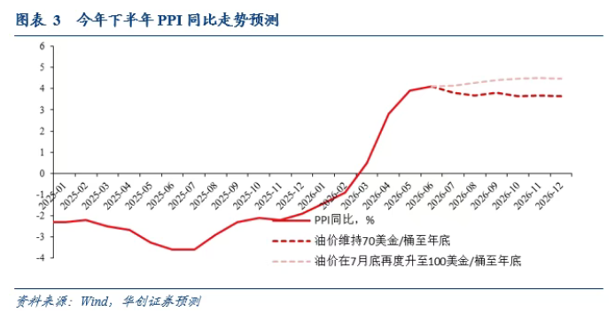
一句话核心：工业品出厂价（PPI）同比大概率在 6 月见顶，但下半年会高位横盘（3.5–4%），不至于快速回落。
背景与关键数据：PPI（生产者价格指数）是工业企业卖出产品的价格，是企业利润和上游景气度的先行指标。华创的判断是"见顶但不崩"——同比高点在 6 月，之后在 3.5–4% 区间波动。因为 PPI 是名义 GDP 的重要组成，PPI 不崩，名义 GDP 就有支撑（呼应帖 3）。
图片解读：华创证券《图表3：今年下半年 PPI 同比走势预测》。横轴为 2025 年 1 月至 2026 年 12 月，纵轴 -4% 到 +6%。实线（历史 PPI 同比）从 2025 年的 -3% 深坑一路爬升，2026 年上半年急速拉升到 +4% 附近见顶。之后分叉成两条虚线情景：
- 红虚线（油价维持 70 美元/桶至年底）：小幅回落到 3.5% 附近横盘。
- 粉虚线（油价 7 月底再度升至 100 美元/桶）：反而继续上行到 4.5% 左右。 两种情景都落在"高位不崩"的区间，关键变量是油价。
为什么重要 / 对市场和经济的含义：PPI 见顶但不崩，对周期股、上游资源股是中性偏正面（价格高位维持利润），对名义 GDP 是支撑。而油价成为决定 PPI 走向的关键——这就把帖 4 和帖 7（霍尔木兹海峡、油价、crack spread）直接连了起来：地缘冲突若推高油价，中国 PPI 反而更高，输入型通胀抬头。
延伸知识："基数效应"是看懂同比数据的必修课。PPI 同比 = 今年价格 / 去年同期价格 - 1。去年（2025）PPI 是深坑（低基数），所以今年同比自然显得高；等到下半年去年基数抬高，同比读数就会自然回落——这部分"回落"是数学效应，不代表价格真的在跌。分析师说"见顶"，很大程度是在说基数效应的拐点。
帖 5 · 12:29 · 央行购金 & 纽元空头 #金融#
帖子原文
bloomberg：波兰央行在近几个月价格下跌时购买黄金，今年迄今为止，该银行已购买了82吨黄金，目前持有632.4吨黄金。波兰央行的目标是积累700吨黄金，如果年底完成，可能后续央行购金少一大将。瑞银称，周三纽约交易中黄金跌破关键技术支撑4050至4023低点，主要由止损清算和持仓推动，而非宏观基本面的重大恶化。 新西兰元在制造业数据强劲推动下，上涨至两周多来的最高点，市场对其进一步货币收紧的押注增加。RBNZ的鹰派转向为纽元提供了良好支撑，富国银行表示之前对冲基金对新西兰元做空布局太强，现在正在转变。#金融#
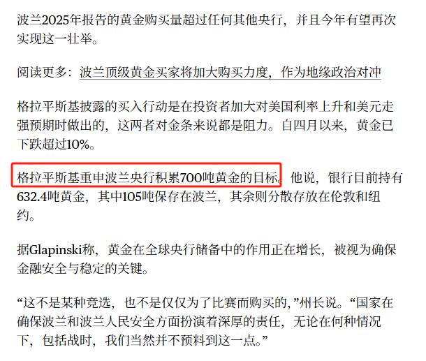
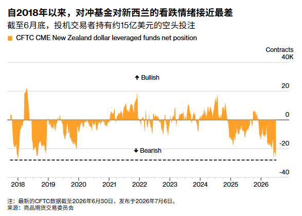
一句话核心：波兰央行逢低扫货黄金（目标 700 吨，已 632 吨），黄金短线跌破 4050 但只是技术性止损盘；同时纽元因制造业强劲 + 央行鹰派而反弹，此前的空头正在回补。
背景与关键数据：黄金现价已在 4000 美元/盎司 上方（帖中提到跌破 4050→4023），这是历史极高水平。央行购金是近年金价的重要支撑力量——波兰今年买了 82 吨、持仓 632.4 吨、目标 700 吨。帖子提醒：如果波兰年底达标"收手"，会少一个大买家。"跌破技术支撑由止损清算推动，而非基本面恶化"意思是——这波下跌是交易层面的（触发止损单连环平仓），不是黄金的逻辑坏了。
图片解读：
- 图1（新闻截图）：确认波兰央行数据——重申 700 吨目标，目前 632.4 吨，其中 105 吨存在波兰本土，其余分散在伦敦和纽约；并称"黄金自四月以来已下跌超过 10%"，格拉平斯基（波兰央行行长）强调黄金是"确保金融安全与稳定的关键"。
- 图2（彭博柱状图）：《自2018年以来，对冲基金对新西兰元的看跌情绪接近最差》。橙色柱是 CFTC 口径下杠杆基金的纽元净头寸，0 轴上方=看多(Bullish)、下方=看空(Bearish)。图右端（2026 年中）柱子深深探到 -20-40K 合约区间，接近 2018 年以来最极端的净空头（约 15 亿美元空头）。极端空头 = 一旦利多出现，空头回补会带来剧烈反弹——这正是帖子说纽元上涨的原因。
为什么重要 / 对市场和经济的含义：黄金的"央行需求"是结构性利多，但要留意大买家达标后的边际减弱；短线的止损式下跌往往是"洗盘"而非趋势反转。纽元的启示是**"拥挤交易"的反转风险**——当所有人都站在一边（极端做空），任何一点利好都会引发踩踏式回补。
延伸知识："拥挤交易 / 空头回补（short squeeze）"是交易世界的重要现象。CFTC 每周公布的持仓报告（COT）能看到投机资金的净多空，当净头寸走到历史极值，往往是反转的前兆——不是因为基本面变了，而是因为"没人可以再卖了，只剩买回来"。这个逻辑在帖 8（港股融资空头回补）会再次出现，值得记住：极端一致预期本身就是风险。
帖 6 · 12:21 · 30 年美债收益率创 2007 年来最高 #金融#
帖子原文
bloomberg：周四30年期美债拍卖创下近20年来最高收益率，凸显了债券供应激增促使投资者对美债更高的回报要求。PGIM表示长期国债收益率可能继续攀升，特别是由于全球各国政府以及企业为人工智能基础设施融资而借款增加。预计未来12个月内收益率将达到5.5%。#金融#
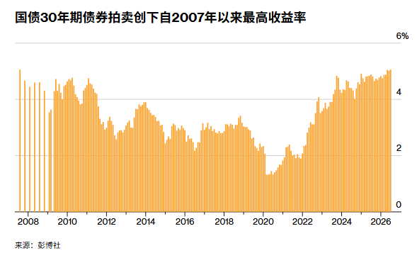
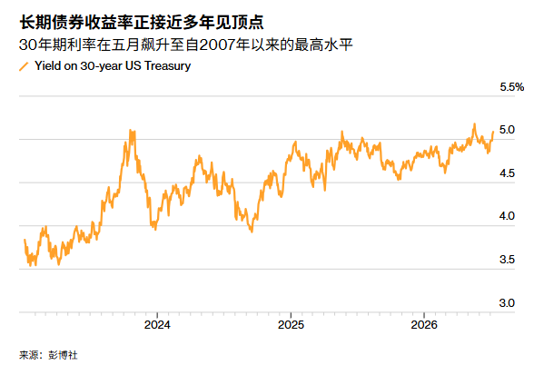
一句话核心：30 年期美债拍卖利率创 2007 年以来新高，供给激增 + AI 基建融资需求让长端利率还有上行空间，PGIM 看未来 12 个月到 5.5%。
背景与关键数据：美国国债拍卖的中标收益率越高，说明投资者要求越高的补偿才愿意接盘——本质是"美国政府借钱越来越贵"。原因有二：一是供给激增（财政赤字大、发债多）；二是AI 基建大规模融资（政府和企业都在为数据中心、算力借钱，抢占资金）。PGIM（保德信旗下资管）预计 30 年收益率将升至 5.5%。
图片解读：
- 图1（橙色柱状图）：《国债30年期债券拍卖创下自2007年以来最高收益率》，横轴 2008–2026，纵轴 0–6%。柱高代表每次拍卖收益率，可见 2020 年触底（<1.5%）后一路抬升，2024–2026 已逼近甚至触及 5%，接近图左端 2008 年金融危机前的高位。
- 图2（橙色折线图）：《长期债券收益率正接近多年见顶点 / 30年期利率在五月飙升至自2007年以来的最高水平》，聚焦 2024–2026，纵轴 3.0–5.5%。曲线震荡上行，右端逼近 5.0%。 两图共同确认：美债长端利率处在近 20 年最高区域，且仍在向上。
为什么重要 / 对市场和经济的含义：30 年美债被称为"全球资产定价之锚"。它越高，意味着：股票估值（尤其高成长/高久期科技股）承压、房贷利率高企、政府利息负担加重。这也解释了帖 1（德国扩军发债）、帖 2（养老金减配债券）——全球都在"抢钱"，而债券买家结构在弱化，长端利率易上难下。对投资者，这是"无风险利率高企"的宏观背景，会持续压制风险资产估值。
延伸知识："期限溢价（term premium）"是理解长端利率的关键。它指投资者持有长期债券、承担未来不确定性所要求的额外补偿。过去十年 QE（量化宽松）把期限溢价压到极低甚至为负；如今 QT（缩表）+ 巨额发债 + AI 融资潮，让期限溢价重新抬升。所以即使美联储不加息，长端利率也可能因期限溢价上升而走高——这与"短端看央行、长端看供需和溢价"的规律一致。
帖 7 · 12:17 · 美伊军事升级 & 霍尔木兹海峡（zerohedge 长文）#金融#
帖子原文
zerohedge：谈不拢的终究谈不拢，但撕破脸可以避免#金融#
（本帖为一篇长图文，含 7 张截图，覆盖美伊军事冲突、霍尔木兹海峡航运、油价 crack spread、叙利亚地缘等）
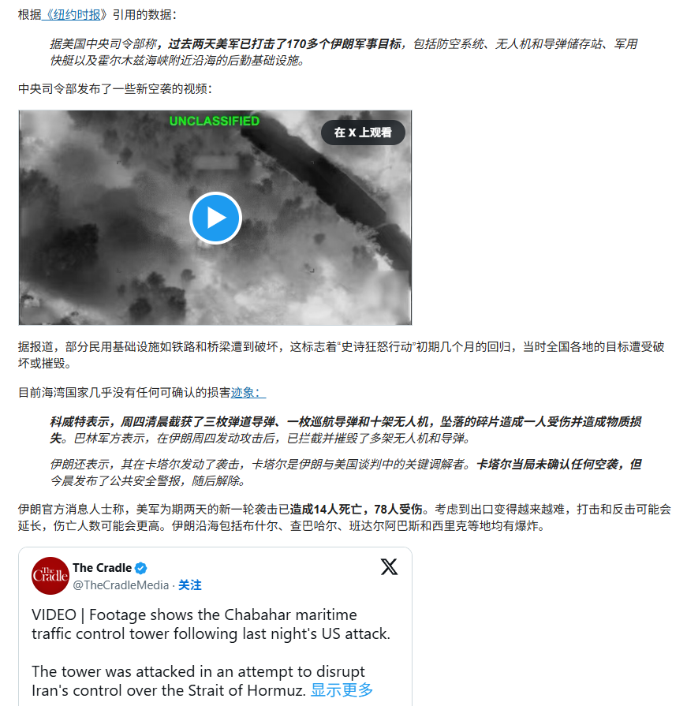
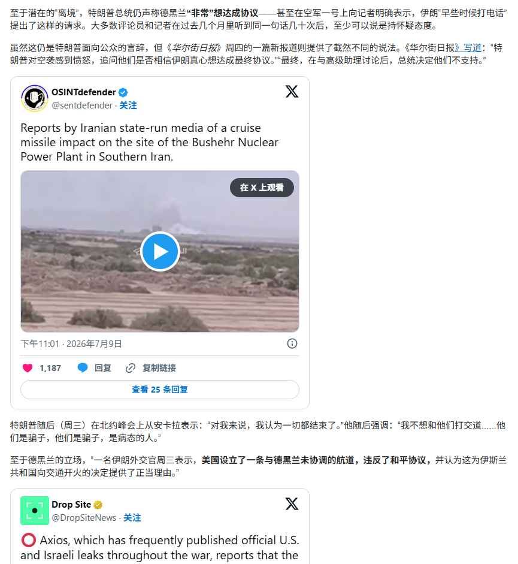
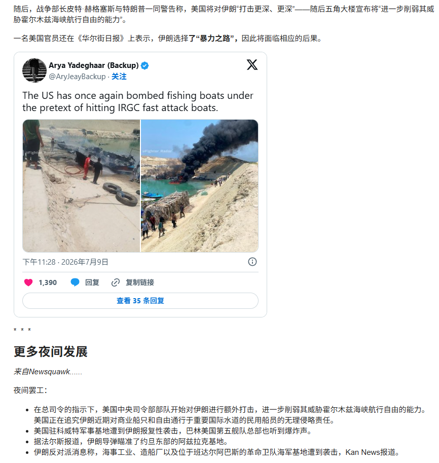
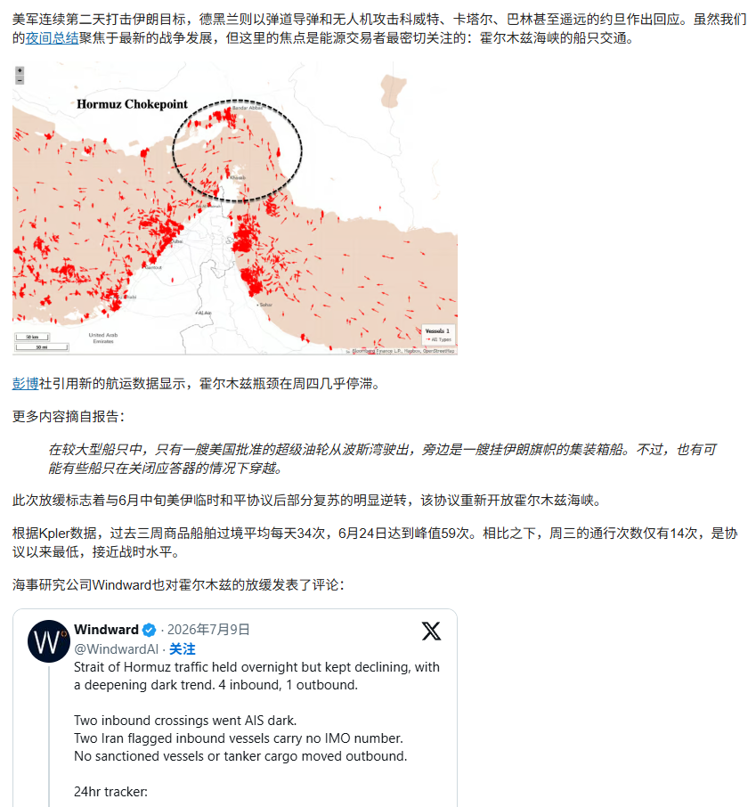
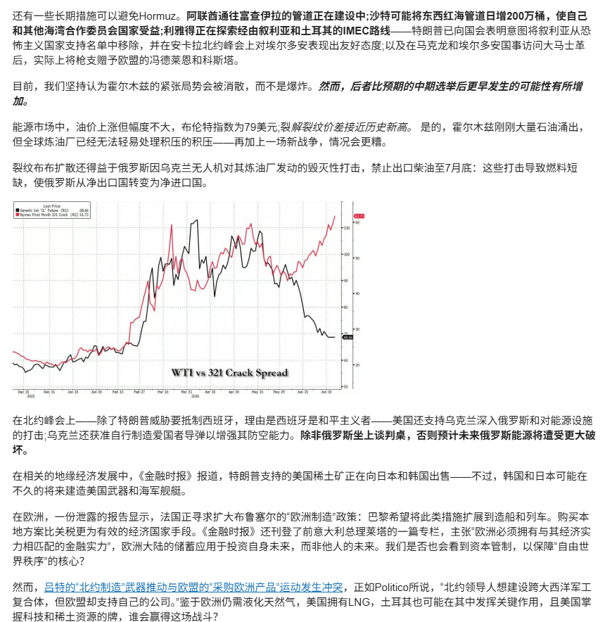
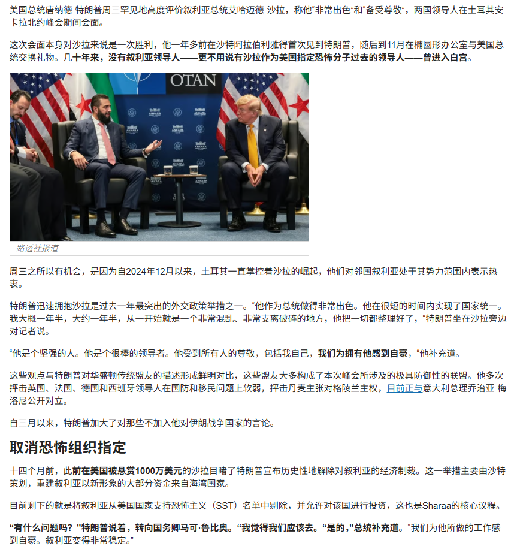
一句话核心：美伊冲突再度升级（美军连续两晚空袭伊朗 170+ 军事目标，伊朗以导弹/无人机反击科威特、卡塔尔、巴林及约旦），但市场焦点是霍尔木兹海峡航运几近停滞、油价与炼油利润的联动。
背景与关键数据：霍尔木兹海峡是全球最重要的能源咽喉，约五分之一的石油海运经此通过。帖中援引 Kpler 数据：过去三周商船日均过境 34 次、6 月 24 日峰值 59 次，而周三仅 14 次——是停火协议以来最低、接近战时水平。这意味着能源供给端出现实质性扰动。
图片解读（择要）：
- 图1–4：美军空袭现场（港口起火）、约旦拦截伊朗导弹、美国"再次以打击 IRGC 快艇为名炸渔船"、伊朗对巴林/科威特美军基地反击等社交媒体截图，佐证冲突的广度与烈度（伤亡 14 死 78 伤）。
- 图5：《Hormuz Chokepoint》AIS 船舶密度地图，红点=船只，海峡处（虚线圈）明显稀疏，直观展示"航运停滞"。Windward 数据显示部分入境船只"AIS 关闭（走暗）"、伊朗旗船无 IMO 编号——规避追踪。
- 图6：《WTI vs 321 Crack Spread》，黑线=WTI 原油价格、红线=321 裂解价差。红线右端飙升接近历史新高——裂解价差是炼油厂"买原油、卖成品油"的利润，它冲高说明成品油（尤其柴油）紧张。帖中提到俄乌互相打击炼油厂、俄罗斯禁出口柴油，加剧了成品油短缺。
- 图7：特朗普与叙利亚新领导人沙拉（Sharaa）在北约峰会会面照，谈叙利亚从"支恐名单"移除、稀土/LNG 等地缘经济博弈。
为什么重要 / 对市场和经济的含义：这条是今天最"高能"的一帖。它把地缘风险传导到资产的路径讲清楚了：海峡受阻 → 原油/成品油供给紧张 → 油价与裂解价差走高 → 全球 PPI/通胀抬升（呼应帖 4）→ 央行更难降息（呼应帖 6）。标题"撕破脸可以避免"暗示 Jason 的判断偏向：紧张局势最终会被"消化"而非全面爆发（帖中原文也说"我们坚持认为霍尔木兹的紧张局势会被消散，而不是爆炸"）。但风险敞口极大，油、金、军工是对冲方向。
延伸知识："裂解价差（crack spread）"是能源交易的核心概念：炼油厂买 3 桶原油，产出 2 桶汽油 + 1 桶柴油（所以叫 3-2-1），价差就是炼油利润。它飙升往往意味着"成品油比原油更紧张"，通常发生在炼能受损或需求突增时。历史上 1973、1979 两次石油危机、2022 俄乌冲突后柴油荒，都伴随裂解价差暴涨。看懂它，就能超越"油价涨跌"这一层，判断到底是"原油紧"还是"炼油紧"。
帖 8 · 11:51 · 大摩看港股/中国资产修复 #股市#
帖子原文
摩根斯坦利：近期中国/港股跑赢主要来自两个因素，第一，funding short unwinding，也就是融资性空头回补。很多全球投资者此前把香港和中国股票当成"融资空头"，也就是说，做空中国/港股，用释放出来的资金去买韩国、台湾、日本等表现更强的市场。最近这些市场回调，导致投资者需要平掉部分中国空头仓位，中国市场因此获得支撑。第二，南向资金继续流入。在全球风险偏好转弱时，南向资金为港股提供了稳定流动性来源。我们认为7月底到8月将是中国市场能否形成可持续修复的关键阶段。此前在年中展望里已经提示，进入8月，港股具备更有意义修复的条件，原因包括三点：第一，电商二季度业绩可能确认价格战对盈利的伤害已经见顶。第二，AI商业化前景继续改善。第三，7月较重的IPO股份解禁压力可能基本被消化。所以当前港股修复的第一阶段，空头不敢继续空了。第二阶段才是多头愿意真正加仓。#股市#
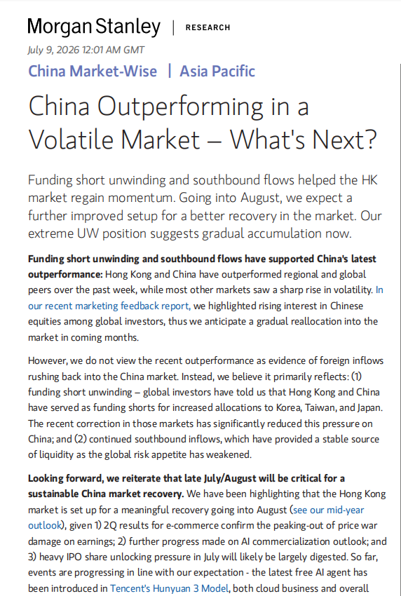
一句话核心：港股/中国近期跑赢，主要是"融资空头回补 + 南向资金"这类技术/资金面因素，真正的多头加仓（第二阶段）还没到；7 月底–8 月是能否持续修复的关键窗口。
背景与关键数据：什么叫"融资性空头（funding short）"？全球基金想加仓韩国/台湾/日本这些强势市场，但又不想净多头敞口太大，于是同时做空中国/港股来"融资"和对冲。当韩台日回调，这些基金被迫平掉（买回）中国空头——中国股票因此被动获得买盘。这不是"看好中国"，而是"被迫回补"。大摩把港股修复分两阶段：第一阶段=空头不敢空了（现在），第二阶段=多头真加仓（未来）。三个 8 月催化剂：电商价格战伤盈利见顶、AI 商业化改善、IPO 解禁压力消化。
图片解读：大摩研究报告首页《China Outperforming in a Volatile Market — What's Next?》(2026-07-09)。要点用文字列明：港股/中国过去一周跑赢，主因是(1) funding short unwinding，(2) 持续的南向资金流入；并强调这不代表外资大举回流，而是技术性支撑。报告维持"极端低配(extreme UW)"下"逐步建仓(gradual accumulation)"的观点。
为什么重要 / 对市场和经济的含义：这帖给港股的上涨"泼了半盆冷水又给了半杯希望"——上涨是真的，但性质是"空头回补"而非"信仰回归"，可持续性要看 7 月底–8 月的基本面兑现。对投资者，含义是：别把技术性反弹当成趋势反转，但也别忽视"空头出清"后向上的弹性。这与帖 5（纽元空头回补）、帖 16（监管转松）逻辑互相印证。
延伸知识："拥挤空头的自我修复"：当一个市场被极度看空、成为全球对冲工具时，它对利好会异常敏感（因为空头太多）。这也是为什么"最被讨厌的市场"有时反而涨得最猛——不是基本面突然变好，而是仓位太极端。搭配帖 5 的 COT 逻辑一起看，你会发现"仓位分析"是判断短期拐点的利器，与"基本面分析"互为补充。
帖 9 · 11:41 · 欧盟对华轮胎征反倾销税 #经济数据#
帖子原文
瑞银：欧盟调查认为，来自中国的部分乘用车轮胎以不公平的低价倾销到欧盟市场，对欧洲轮胎制造商造成了实质性损害，包括市场份额流失、生产水平下降、盈利能力下降。因此，欧盟决定征收最终反倾销税，并从 2026年7月8日 起生效。24%—45%的关税基本符合市场和行业此前预期，投资者大概已经预期税率在 30%—40% 左右。我们估计，中国轮胎制造商在征税前的毛利率约为 12%。如果加征24%—45%的进口税，这基本会抹掉中国制造商原本的毛利。中国轮胎制造商可能会把部分生产转移到中国以外，例如泰国、越南等地，但这个过程大约需要 一年。#经济数据#
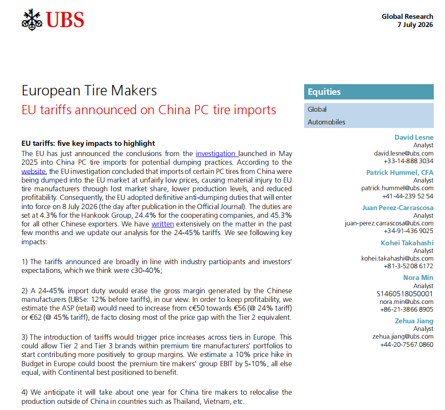
一句话核心：欧盟对中国乘用车轮胎征收 24–45% 反倾销税（7/8 生效），基本抹掉中国厂商约 12% 的毛利，倒逼产能外迁（泰越），但需约一年。
背景与关键数据："反倾销税（anti-dumping duty）"是指：当一国认定外国商品以低于成本/正常价值的价格倾销、损害本国产业时，加征的惩罚性关税。欧盟这次税率 24.4%（合作企业）/45.3%（其他）/4.3%（韩泰 Hankook，最低）。关键账：中国厂商税前毛利约 12%，加 24–45% 的税，利润被完全吃掉。应对是把产能搬到泰国、越南绕开关税，但迁移周期约一年。
图片解读：瑞银报告首页《European Tire Makers — EU tariffs announced on China PC tire imports》(2026-07-07)。列出"五个关键影响"：(1) 税率符合此前 30–40% 预期；(2) 24–45% 税率抹掉中国厂商 12% 毛利，零售价需从约 €50 提到 €56（24%税）或 €62（45%税）；(3) 会触发欧洲各档轮胎全面提价，利好欧洲高端轮胎厂商（大陆 Continental 最受益，集团 EBIT 可提振 5–10%）；(4) 中国厂商产能外迁约需一年。
为什么重要 / 对市场和经济的含义：这是"贸易保护主义常态化"的又一个案例。对中国轮胎出口是直接利空，对欧洲本土轮胎厂（Continental、Michelin、Pirelli）是利好。更宏观地看，它反映了全球产业链"去中国化/近岸化"的趋势——中国制造被关税逼着往东南亚转移。这与帖 7 中"稀土、LNG、欧洲制造 vs 北约制造"的博弈，同属"全球化退潮、阵营化重构"的大主题。
延伸知识："关税规避（tariff circumvention）"与"转口贸易"：企业面对高关税的经典应对是把最终组装环节搬到第三国（如泰国、越南、墨西哥），从而改变"原产地"。这也是为什么近年越南、墨西哥对美欧出口激增。但各国也在收紧"原产地规则"来堵漏洞。理解这条链，就能明白为什么"加关税"往往不能真正消灭进口，只是改变了贸易的地理路径，并抬高了全球的交易成本（最终由消费者买单）。
帖 10 · 11:35 · 韩元为何偏弱 #其他国家经济#
帖子原文
摩根斯坦利：韩元今年表现很弱，但这与韩国基本面并不匹配。原因主要有三个：第一，外国投资者大量卖出韩国股票。第二，出口商可能没有把激增的美元出口收入同步换成韩元。第三，韩国本土资金，包括散户、资产管理机构和国民年金，仍在配置海外资产。我们预估韩元温和增长，预计韩国央行7月开始加息，2026年加两次，2027年再加两次，终端利率上调至 3.5%。如果美联储维持利率不变，韩美利差收窄，也会支撑韩元。#其他国家经济#
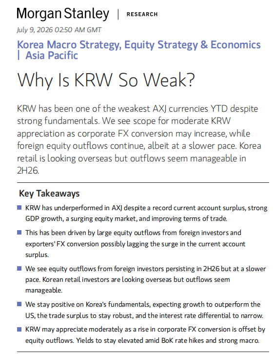
一句话核心：韩元偏弱不是基本面差，而是资金外流（外资卖股 + 出口商不结汇 + 本土配置海外）；大摩预计韩元温和升值，韩央行将开启加息周期（终端 3.5%）。
背景与关键数据：韩国基本面其实很强——创纪录经常账户顺差、GDP 强劲、股市大涨、贸易条件改善，但韩元(KRW)却是亚洲今年最弱货币之一。矛盾的解释在"资金账户"：(1) 外资净卖韩股；(2) 出口商赚了美元不换回韩元（可能预期韩元还会贬）；(3) 韩国国民年金等本土长钱持续买海外资产。这三股力量都在"卖韩元买外币"。大摩预计随着企业结汇增加 + 韩央行加息（2026 两次、2027 两次，终端 3.5%）+ 韩美利差收窄，韩元会温和升值。
图片解读：大摩报告首页《Why Is KRW So Weak?》(2026-07-09)。Key Takeaways 列出：韩元在亚洲(除日本)货币中表现最弱，尽管基本面强劲；主因是外资股票外流 + 出口商结汇滞后；预计 2H26 外流放缓，韩国散户仍在买海外但外流可控；对韩国基本面维持正面，预计增长跑赢美国、贸易顺差稳健、利差收窄；韩元或温和升值，收益率在韩央行加息和强宏观下维持高位。
为什么重要 / 对市场和经济的含义：韩元是"全球风险偏好和亚洲出口景气"的晴雨表之一。它揭示了一个重要现象——"基本面好"不等于"货币强"，资金流向（capital flows）才是短期汇率的主导。对投资者，若认同大摩的"韩元被低估、终将升值"，则韩债/韩股在货币升值时有汇兑收益。这也与帖 8（外资把资金从中国挪向韩台日）形成呼应：韩国的资金流入正是中国被"融资做空"的另一面。
延伸知识：理解汇率要分"经常账户"（贸易/收入，看基本面）和"资本与金融账户"（投资/资金流动，看利差与偏好）。韩国的案例是典型的"经常账户顺差但资本账户流出"——赚来的美元没换成本币，反而流向海外。这解释了很多"基本面与汇率背离"的困惑。记住一句话：长期看购买力和贸易，短期看利差和资金流。
帖 11 · 11:30 · 中国 PC/平板出货继续下滑 #经济数据#
帖子原文
摩根斯坦利：5月中国PC和Tablet出货量继续同比下滑，PC同比下降14%，平板同比下降7%；但品牌之间分化明显，Apple在PC端逆势高增长，Lenovo在平板端表现较强。电脑和平板不是每天都买的刚需，而是典型的可选消费和换机周期品。出货量同比下滑，说明居民和企业端对大件电子产品的换新意愿仍然谨慎。#经济数据#
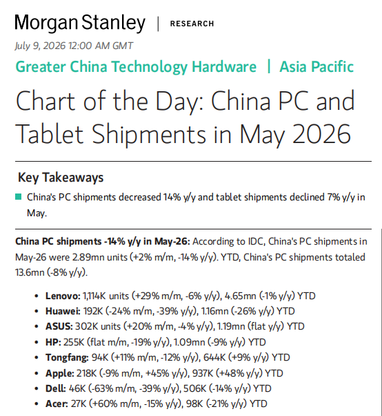
一句话核心：5 月中国 PC 出货 -14%、平板 -7%，反映居民和企业对大件电子品换新仍谨慎；但品牌分化——Apple 逆势高增。
背景与关键数据：PC 和平板是典型的"可选消费 + 换机周期品"——不是每天要买的刚需，经济不确定时最容易被推迟。出货量同比下滑，是内需偏弱、换机意愿低的微观佐证。分化很关键：整体差，但 Apple（PC 端）逆势高增、Lenovo（平板端）较强，说明是"结构分化"而非全线崩塌。
图片解读：大摩《Chart of the Day: China PC and Tablet Shipments in May 2026》。据 IDC，5 月中国 PC 出货 289 万台（环比 +2%、同比 -14%），年初至今累计 1360 万台（-8%）。分品牌（同比）：Lenovo 111.4 万台(-6%)、Huawei 19.2 万台(-39%)、ASUS 30.2 万台(-4%)、HP 25.5 万台(-19%)、Tongfang 9.4 万台(-12%)、Apple 21.8 万台(-9% m/m 但 +45% y/y)、Dell 4.6 万台(-39%)、Acer 2.7 万台(-15%)。Apple 的同比高增与其他品牌的普遍下滑形成鲜明反差。
为什么重要 / 对市场和经济的含义：这是观察中国内需强度的高频窗口。大件耐用消费品疲软，说明"资产负债表修复 + 消费信心"仍需时间，与帖 3 平减指数转正"但下游偏弱"的判断一致。对市场，利空整体消费电子产业链，但**结构性亮点（Apple、AI PC 换机潮）**值得挖掘。
延伸知识："耐用品消费周期"是宏观里的重要领先指标。汽车、电脑、家电这类大件，消费者会根据对未来收入的信心来决定"现在买还是再等等"，因此对经济预期极其敏感——景气差时最先被砍，复苏时又最先反弹（"递延需求"释放）。所以经济学家爱盯耐用品订单：它像一面镜子，照出居民和企业对未来的真实信心。
帖 12 · 11:25 · 新西兰央行仍要加息 & JPM 利率汇率预测表 #其他国家经济#
帖子原文
JPM：我们认为新西兰央行9月还会加息，OIS市场目前定价9月会议再次加息的概率约 75%。新西兰票据期货曲线仍然偏陡，暗示市场认为政策利率会较快回到接近中性水平。澳洲情况不同，我们认为澳洲利率已见顶，2027年存在降息空间。#其他国家经济#
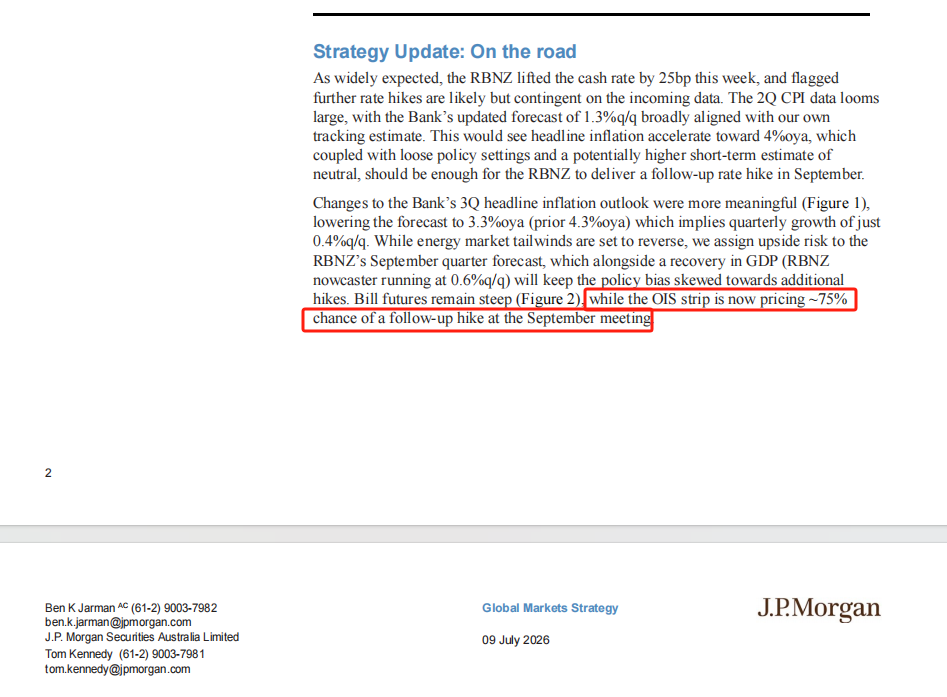
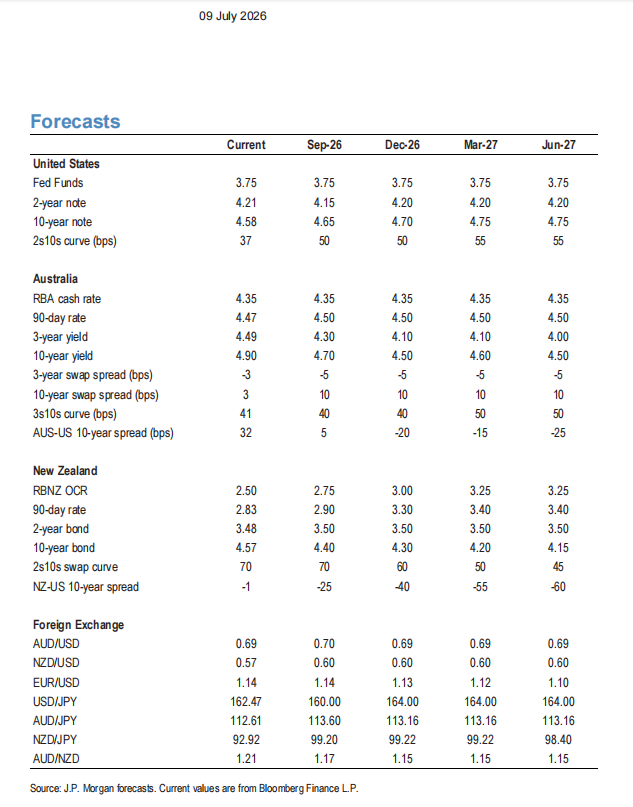
一句话核心：小摩预计新西兰央行 9 月继续加息（市场定价约 75% 概率），而澳洲利率已见顶、2027 年或降息——两个近邻央行走向分化。
背景与关键数据：新西兰联储(RBNZ)本周已加息 25 基点，并暗示还会继续，因二季度 CPI 可能推动通胀向 4% 加速。OIS（隔夜指数掉期） 是市场对未来政策利率的定价工具，"9 月加息概率 75%"就是从 OIS 反推出来的市场预期。澳洲(RBA)则相反，已见顶、有降息空间——反映两国经济周期不同步。
图片解读：
- 图1（JPM 文字页）：《Strategy Update: On the road》，重申 RBNZ 本周加息 25bp，二季度 CPI 关键，通胀或向 4% 加速，9 月大概率再加息；红框标注"OIS strip 现定价 9 月会议再加息概率约 75%"。
- 图2（JPM 预测表）：横向是 Current / Sep-26 / Dec-26 / Mar-27 / Jun-27 五个时点，纵向分美国、澳洲、新西兰、外汇。关键数字：美国 Fed Funds 全程维持 3.75%（即不降息）、10 年美债从 4.58% 升到 4.75%；新西兰 OCR 从 2.50% 一路加到 3.25%；澳洲 RBA 现金利率维持 4.35%；汇率上 NZD/USD 从 0.57 升到 0.60（预期纽元升值，呼应帖 5）、USD/JPY 在 160–164。
为什么重要 / 对市场和经济的含义：这张表是"一图看全球利率路径"的干货。核心信息有三：(1) 美联储被预期全年不降息（Fed Funds 恒定 3.75%）——这是压制全球风险资产的关键锚；(2) 新西兰逆势加息，纽元被看升（与帖 5 空头回补呼应）；(3) 澳新分化说明"发达小国央行"也各走各路。对投资者，利率预测表是做汇率、债券、carry trade（套息交易）判断的基础工具。
延伸知识："套息交易（carry trade）"是外汇市场的经典策略：借入低利率货币（如日元，USD/JPY 高企反映日元弱），买入高利率货币（如纽元）赚利差。RBNZ 加息、纽元升值会让"做多纽元/做空日元"更有吸引力。但 carry trade 的风险是"平仓踩踏"——一旦市场恐慌，高息货币会暴跌（历史上多次日元套息平仓引发全球波动）。把帖 5、10、12 串起来，你能看到一张完整的"全球利差与汇率"地图。
帖 13 · 11:15 · 中国 6 月 CPI 回落、PPI 动能放缓 #经济数据#
帖子原文
JPM：6月中国整体CPI同比从5月的 1.2% 回落至 1.0%，低于我们预测的 1.2%，也低于市场一致预期的 1.1%。核心CPI也从5月的 1.1% 小幅降至 1.0%。食品仍是最大拖累。6月食品CPI同比下降 1.6%，环比季调后基本持平，对整体CPI同比拖累约 0.28个百分点。服务CPI维持在 0.8%，环比季调后仅 0.1%，说明工资压力和居民服务需求仍然有限。燃油附加费下降、旅游淡季需求偏弱，也拖累了酒店、机票和跟团游价格。PPI动能放缓，主要因为油价回落。从结构看，PPI同比仍然偏上游。生产资料PPI同比上涨 5.5%，环比季调上涨 0.3%；但生活资料PPI仍然处于通缩，同比下降 0.9%，环比下降 0.2%。产业升级确实支撑了一些价格，比如煤炭、设备、AI、电子材料和绿色转型相关产品。但这些支撑是"局部的"，不足以抵消整体内需偏弱。 总之，6月通胀数据符合我们年中展望中的判断：增长在放缓，但没有形成再通胀。 #经济数据#
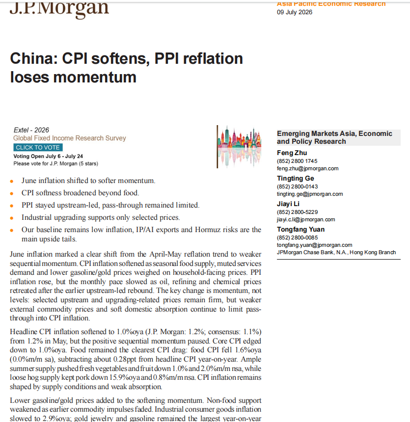
一句话核心：6 月中国 CPI 同比回落到 1.0%（低于预期），核心 CPI、服务价格都弱；PPI 结构上"上游强、下游通缩"，整体是"增长放缓但没有再通胀"。
背景与关键数据：这帖是对"中国到底有没有走出通缩"最精细的拆解。CPI 1.0%（低于预期 1.1%）、核心 CPI 1.0%，食品是最大拖累（食品 CPI -1.6%，拖累整体约 0.28 个百分点）；服务 CPI 仅 0.8%、环比 0.1%，说明工资和服务需求都疲弱。PPI 层面：生产资料(上游) +5.5%，但生活资料(下游消费品) 仍 -0.9% 通缩——这就是"上游热、下游冷"的分化。产业升级（煤炭、设备、AI、电子材料、绿色）支撑部分价格，但"局部的、不足以抵消内需弱"。
图片解读：JPM 报告首页《China: CPI softens, PPI reflation loses momentum》(2026-07-09)。要点：6 月通胀转向更弱动能；CPI 疲软已从食品扩散到更广范围；PPI 仍上游主导、传导有限；产业升级只支撑部分价格；基线维持"低通胀"，IP/AI 出口与霍尔木兹风险是主要上行尾部风险。正文详述 CPI 1.0%、核心 1.0%、食品 -1.6%、猪肉 -15.9% 等。
为什么重要 / 对市场和经济的含义：这是给帖 3（平减指数转正）的"冷静补丁"——宏观平减指数虽转正，但那主要是上游/PPI 拉动的统计性回暖，居民端的真实通胀（CPI、服务、食品）仍然疲软。对政策，意味着货币/财政仍需宽松（呼应帖 16 央行引导利率下行）；对市场，"低通胀 + 弱内需"压制消费股、利好有政策预期的成长/科技板块。
延伸知识："核心 CPI"（剔除食品和能源）是判断通胀"真实底色"的关键——因为食品、能源波动大、易受供给冲击，剔除后更能看清需求端的价格趋势。中国核心 CPI 仅 1.0%、服务价格疲弱，说明"内生需求"不足，价格上涨主要靠上游成本推动而非需求拉动。学会区分"成本推动型"和"需求拉动型"通胀，是判断复苏成色和政策方向的基本功。
帖 14 · 11:07 · 花旗：二季度中国经济放缓的隐性推手是"财政紧缩" #TAX#
帖子原文
花旗：2026年二季度中国经济急剧放缓，一个被市场低估的驱动因素，是事实上的财政紧缩。中央和地方政府都在造成财政收缩，但渠道不同：PPI再通胀和税收征管趋严推高税收收入，尤其是个人所得税，1月至5月同比增长 12.2%。这导致中央财政盈余比去年更大；地方政府则受到土地出让收入下降、债务约束、缺少高质量项目等压力，导致它们没有能力、也没有意愿用传统方式刺激经济。这种紧缩会在2026年下半年逆转，因为财政投放会加快，并推动经济温和反弹。从总体财政看，1月至5月，广义财政赤字，也就是一般公共预算加政府性基金预算，只有GDP的 2.2%，低于去年同期的 2.4%。用12个月滚动口径看，广义财政赤字从2025年底的 9.0% 降到2026年5月的 8.8%。这说明财政对经济的支持力度边际减弱。AI收益再分配会成为财政改革议题。AI驱动的新经济正在中国K型经济中站到中心位置，加剧分化，也给消费者带来压力，因为快速采用AI可能提高就业替代风险。2027年及以后财政改革会成为关键主题，其中第一条就是重新平衡中央和地方财政关系。政策层面已经释放信号：消费税改革、地方附加税费整合等可能推进。#TAX#
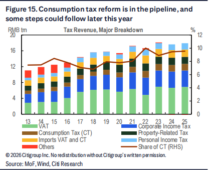
一句话核心：花旗认为二季度中国经济放缓的一个被低估原因是"事实上的财政紧缩"——税收征管趋严（个税 +12.2%）+ 地方无力刺激，导致财政边际收缩；下半年会逆转，2027 年财政改革（含消费税）是关键主题。
背景与关键数据："事实上的财政紧缩（de facto fiscal tightening）"——不是政府主动喊"要紧缩"，而是结果上财政在收缩：一方面 PPI 回升 + 税收征管严格推高了税收（尤其个税 1–5 月 +12.2%），让中央财政盈余更大（收得多=从经济抽血多）；另一方面地方政府受土地出让收入下滑、化债约束、缺好项目拖累，没能力也没意愿花钱刺激。数据：1–5 月广义财政赤字仅 GDP 的 2.2%（去年同期 2.4%）、12 个月滚动口径从 9.0% 降到 8.8%——财政支持力度在减弱。花旗判断下半年会逆转（财政投放加快，经济温和反弹）。
图片解读：花旗《Figure 15: Consumption tax reform is in the pipeline》，堆叠柱状图 + 折线。横轴 2013–2025，左轴 RMB 万亿（税收总额），右轴 %（消费税占比）。堆叠柱按税种分：VAT(增值税，浅蓝，最大块)、消费税 CT(绿)、进口 VAT 和 CT(黄)、企业所得税(深蓝)、房地产相关税(黑)、个人所得税(蓝)、其他(白)。橙色折线=消费税占总税收比重(右轴)，在 8–10% 区间波动。图意在说明税收结构，并铺垫"消费税改革"（可能扩围、征收环节后移到零售端、划归地方）是未来方向。
为什么重要 / 对市场和经济的含义：这帖点破了一个反直觉的真相——在大家喊"要刺激"的时候，中国财政其实在悄悄收紧（征管严 + 地方没钱）。这解释了为什么二季度经济和内需偏弱（呼应帖 11、13）。前瞻信息更重要：下半年财政有望发力（利好顺周期、基建），2027 年财政改革（消费税、央地关系）是中长期大主题。"AI 收益再分配""K 型分化"则提示 AI 时代的贫富/就业矛盾会成为财政政策的新命题。
延伸知识："财政脉冲（fiscal impulse）"衡量财政对经济的边际拉动——不看赤字绝对水平，而看赤字的"变化方向"。赤字率从 2.4% 降到 2.2%，虽然仍是赤字（政府净支出为正），但赤字在缩小，对经济的边际拉动是负的（财政脉冲转负）。这就是"事实上紧缩"的本质。理解"水平 vs 变化"的差别，能帮你看穿很多"财政很积极"的表象——关键不是花了多少，而是比去年多花还是少花。
帖 15 · 10:49 · 中药材价格大跌 #经济数据#
帖子原文
瑞银：原材料成本是中成药产品成本通胀的主要驱动因素，约占中药企业总销售成本的 70%。继2024年下半年中药材价格开始下行之后，2026年上半年，中药材综合200指数同比下降 15%，6月环比下降 3%。由于社会库存仍高、需求仍弱，我们预计中药材价格下行趋势可能延续。#经济数据#
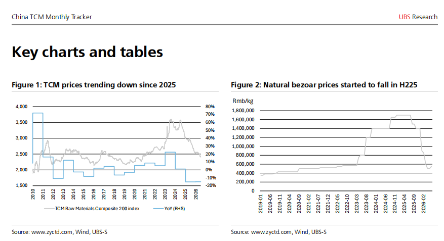
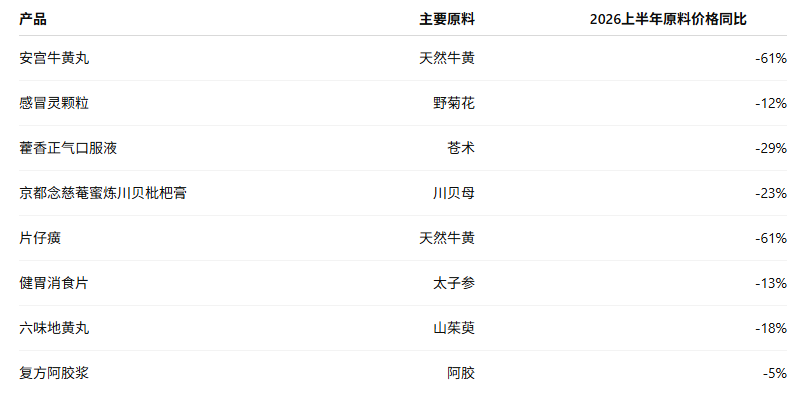
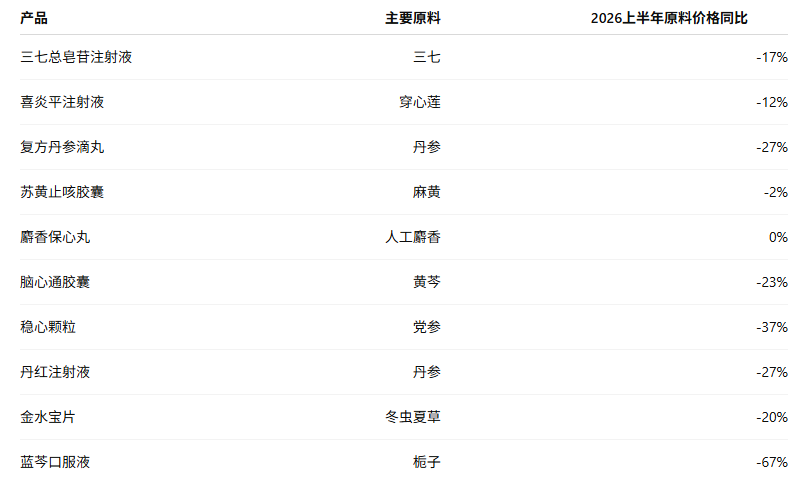
一句话核心：中药材价格持续下跌（综合 200 指数同比 -15%），而原材料占中药企业成本约 70%，意味着中药企业的成本压力大幅缓解、毛利率有望改善。
背景与关键数据：原材料占中药企业销售成本约 70%，所以药材价格就是中药企业利润的命脉。中药材综合 200 指数 2026 上半年同比 -15%、6 月环比 -3%，且因"社会库存高 + 需求弱"，跌势可能延续。成本下降 = 药企毛利改善（尤其对提价能力弱的普药是纯利好）。
图片解读：
- 图1（瑞银双图）：《Figure 1: TCM prices trending down since 2025》——灰线=中药材原料综合 200 指数，2023–2024 冲高到 3500 后，2025–2026 快速回落到约 2000；蓝线(右轴 YoY)明显跌入负值区(-20% 附近)。《Figure 2: Natural bezoar(天然牛黄) prices started to fall in H225》——天然牛黄价格从 2024–2025 的约 160 万元/公斤高位，2026 年初开始下跌到约 60 万元/公斤，跌幅巨大。
- 图2、图3（明细表）：列出各中成药产品的主要原料及 2026 上半年原料价格同比。跌幅最大的：安宫牛黄丸/片仔癀（天然牛黄）-61%、蓝芩口服液(栀子) -67%、稳心颗粒(党参) -37%、藿香正气(苍术) -29%、复方丹参/丹红(丹参) -27%、脑心通(黄芩) -23%、金水宝(冬虫夏草) -20%、六味地黄丸(山萸萸) -18%；麝香保心丸(人工麝香) 持平 0%。
为什么重要 / 对市场和经济的含义：这是一条行业/个股层面的利润信号——原料成本大跌，直接利好片仔癀、同仁堂等中药龙头的毛利率（尤其重仓天然牛黄的品种）。但也要辩证看：药材跌价的原因是"库存高 + 需求弱"，若是需求疲软导致，说明终端销售也可能承压，需区分"成本利好"和"需求隐忧"。
延伸知识："猪周期/牛黄周期"这类农产品价格周期很有规律：价格高 → 农户/药农扩种扩养 → 供给过剩 → 价格暴跌 → 减产 → 供给收缩 → 价格再涨。中药材（尤其人工可养殖的牛黄替代、党参、丹参）也遵循这套供给弹性逻辑。看懂周期，就能判断当前是"跌到底部还是半山腰"——库存高企 + 需求弱通常意味着底部还未到，成本利好可能持续释放。
帖 16 · 10:34 · 瑞银：中国政策对港股资产的两个正面信号 #金融#
帖子原文
瑞银：最近中国政策层面出现了两个对港股中国资产偏正面的信号，第一，国家市场监管总局在7月7日召开新闻发布会。在谈到监管整治时，"取得初步成效"这一表述被提到了三次。我们认为，这类措辞往往意味着政策立场可能正在发生变化。过去两周，重大监管动作相对较少。虽然现在下结论还太早，但中国可能正在走过一段监管收紧最强的阶段。第二，央行行长潘功胜宣布多项支持香港金融市场的措施。我们认为其中最重要的一点，是未来将提高外汇储备中香港资产的配置比例。这被视为对香港市场、中国资产的利好。货币市场方面，央行在6月底引导 7天回购利率 下行。随着季节性流动性需求减弱，DR007 已经回落到接近5月底的水平，并低于1.4%的公开市场操作利率。#金融#
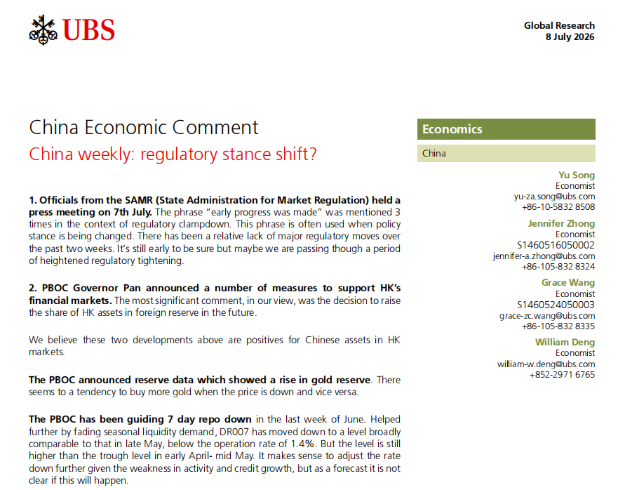
一句话核心：瑞银捕捉两个利好港股/中国资产的政策信号——监管整治或已过最紧阶段（"取得初步成效"被提三次）+ 央行将提高外储中的香港资产配置；同时货币市场利率(DR007)被引导下行、宽松延续。
背景与关键数据：两个信号都是"读政策措辞"的功夫。(1) 市场监管总局 7/7 发布会三次提"取得初步成效"——这类措辞往往暗示"整治接近尾声、立场可能转松"，且过去两周重大监管动作变少；(2) 央行行长潘功胜宣布支持香港金融市场措施，最关键是"未来提高外汇储备中香港资产的配置比例"——等于国家队要给港股/中国资产更多"官方买盘"。货币面：央行 6 月底引导 DR007（银行间 7 天回购利率） 下行，已回落到 5 月底水平、并低于 1.4% 的政策利率——说明流动性宽松。
图片解读：瑞银《China Economic Comment — China weekly: regulatory stance shift?》(2026-07-08)。正文列两点：(1) 市场监管总局 7/7 发布会三次提"early progress was made"，暗示监管收紧最强阶段或已过；(2) 央行潘行长宣布支持香港金融市场，最重要是未来提高外储中香港资产比例——利好在港中国资产。并提到央行公布黄金储备上升（逢低买金，呼应帖 5）、6 月末引导 7 天回购下行、DR007 已低于 1.4% 操作利率。
为什么重要 / 对市场和经济的含义：这帖是今天"看多中国资产"逻辑链的收官——监管转松（风险偏好修复）+ 外储配置港股（增量资金）+ 货币宽松（流动性），三重利好叠加，与帖 8（大摩看港股修复）互相印证。对市场，这些是港股/中国资产基本面与资金面同时改善的政策佐证，支撑"7 月底–8 月修复窗口"的判断。
延伸知识："克里姆林宫学（读措辞）"在中国政策研究里同样适用——官方表述的细微变化（如"取得初步成效""稳中向好""适时降准降息"）往往是政策转向的先行信号，比数据更早。此外，DR007 是观察中国货币政策松紧的核心指标：它是银行间市场以利率债为抵押的 7 天回购加权利率，代表银行体系真实的短期资金成本。DR007 低于央行 7 天逆回购操作利率(OMO)，通常意味着"资金面很松、央行在放水"。学会盯 DR007，就能第一时间感知中国货币政策的温度。
今日全图索引
| 帖号 | 时间 | 主题 | 标签 | 图片文件 |
|---|---|---|---|---|
| 1 | 13:01 | 德国大举扩张国防开支（€162B，采购美国战斧） | #其他国家经济# | post1_img1.png |
| 2 | 12:52 | 全球养老金减配债券、转向共同基金/另类（BIS） | #论文或书籍推荐# | post2_img1.png |
| 3 | 12:41 | 中国 GDP 平减指数同比转正回升至 +2.2%（广发） | #经济数据# | post3_img1.png |
| 4 | 12:38 | 华创预计 6 月为年内 PPI 高点，下半年 3.5-4% 横盘 | #经济数据# | post4_img1.png |
| 5 | 12:29 | 波兰央行逢低购金 + 纽元空头接近历史极值 | #金融# | post5_img1.png, post5_img2.png |
| 6 | 12:21 | 30 年美债拍卖创 2007 年来最高收益率，或升至 5.5% | #金融# | post6_img1.png, post6_img2.png |
| 7 | 12:17 | 美伊军事升级 & 霍尔木兹海峡航运停滞（zerohedge） | #金融# | post7_img1~7.png |
| 8 | 11:51 | 大摩看港股修复：融资空头回补 + 南向资金 | #股市# | post8_img1.png |
| 9 | 11:41 | 欧盟对华轮胎征 24-45% 反倾销税（瑞银） | #经济数据# | post9_img1.png |
| 10 | 11:35 | 韩元为何偏弱：资金外流 vs 强基本面（大摩） | #其他国家经济# | post10_img1.png |
| 11 | 11:30 | 中国 5 月 PC -14%、平板 -7%，Apple 逆势增长（大摩） | #经济数据# | post11_img1.png |
| 12 | 11:25 | 新西兰央行仍要加息、澳洲见顶（JPM 利率汇率预测表） | #其他国家经济# | post12_img1.png, post12_img2.png |
| 13 | 11:15 | 中国 6 月 CPI 回落至 1.0%、PPI 动能放缓（JPM） | #经济数据# | post13_img1.png |
| 14 | 11:07 | 花旗：二季度放缓的隐性推手是"事实上的财政紧缩" | #TAX# | post14_img1.png |
| 15 | 10:49 | 中药材价格大跌（综合 200 指数 -15%）（瑞银） | #经济数据# | post15_img1~3.png |
| 16 | 10:34 | 瑞银：监管转松 + 外储配港股 + 货币宽松三重利好 | #金融# | post16_img1.png |
免责声明：本报告为对 Jason 不跪公开转发内容的学习性解读，所有观点均转述自原文引用的机构研报（BIS、瑞银、大摩、JPM、花旗、华创、广发等）及彭博/zerohedge 等媒体，不构成任何投资建议。数据以原文与配图为准。